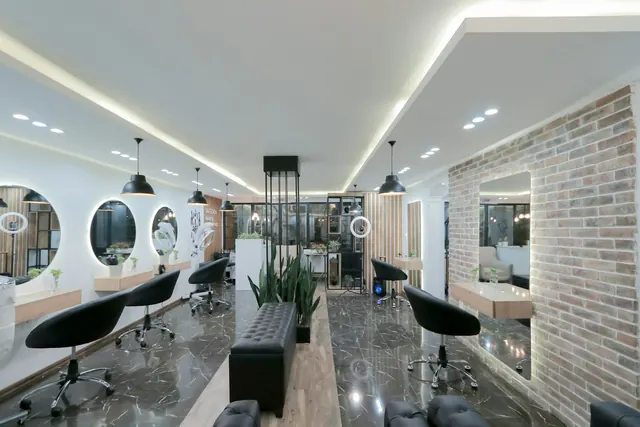

Serviços e preços
Seis serviços, cada um com seu tempo.
Valores de exemplo, em reais. “A partir de” porque cabelo longo, denso ou com química anterior pede mais produto e mais tempo; o valor final é combinado na cadeira, antes de começar.
- 01
Corte
Antes de cortar, a gente olha como o fio cai, como você prende e quanto tempo tem de manhã. Inclui lavagem e finalização.
Com Helena Vasques, Caio Moraes- Lavagem e hidratação rápida
- Corte e acabamento
- Finalização com escova
- 02
Coloração
Cor de raiz, cobertura de brancos ou mudança completa. Fazemos teste de mecha quando o cabelo já tem química.
Com Helena Vasques, Caio Moraes- Teste de mecha e mapa de cor
- Aplicação e tempo de pausa
- Tratamento e finalização
- 03
Mechas e balayage
Balayage, mechas finas ou contorno de rosto. Com cabelo escuro ou colorido, pode levar mais de uma sessão. A conta fecha na avaliação.
Com Helena Vasques- Avaliação do fundo de clareamento
- Mechas e matização
- Corte de pontas e escova
- 04
Escova
Escova com proteção térmica. Para casamento ou evento, agende com 1 hora de folga e leve uma foto.
Com Helena Vasques, Caio Moraes- Lavagem
- Escova modelada
- Proteção térmica
- 05
Manicure
Cutículas, lixa e esmaltação. O esmalte em gel é opcional e acrescenta R$ 25.
Com Dandara Pires- Cutículas e formato das unhas
- Hidratação das mãos
- Esmaltação tradicional
- 06
Sobrancelha
Mapeamos o formato a partir da sua anatomia e tiramos só o que sobra. Sem retoque radical.
Com Dandara Pires- Mapeamento do formato
- Design com pinça ou linha
- Finalização calmante
Antes de marcar
O que pesa no tempo e no valor
Comprimento e volume do cabelo, química anterior e a mudança que você quer. Se tiver dúvida, escreva na observação do agendamento ou mande foto pelo WhatsApp.

Foto ilustrativa, não é o salão fictício.